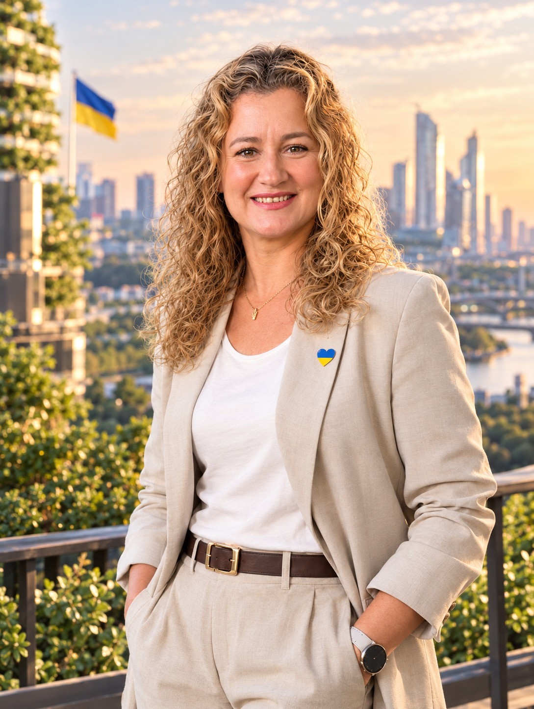

«Рух як код»
Рухові завдання, виклики й командні місії, що допомагають учням мислити, домовлятися та діяти разом.
Ідеї для уроку ↗Я — Олена Романюк, учителька фізичної культури. Створюю простір, де рух стає грою, навчання — досвідом, а кожна дитина відчуває: «Я можу!»

Моя мета — не просто навчити вправи, а допомогти дітям відчути власні можливості, сміливість і радість спільної дії.
Я працюю в Чернівецькому ліцеї №19 і понад 25 років поєдную спорт, педагогіку та творчий пошук. Для мене хороший урок — це той, на якому діти не бояться помилятися, підтримують одне одного й відкривають нові сильні сторони.
У роботі поєдную підходи Нової української школи, ігрові методики, цифрові інструменти та інклюзивні адаптації. Вірю: активність має бути доступною, цікавою і значущою для кожного учня.
Практики, які перетворюють урок на простір взаємодії, вибору та справжнього руху.
Рухові завдання, виклики й командні місії, що допомагають учням мислити, домовлятися та діяти разом.
Ідеї для уроку ↗Адаптації вправ, різні рівні складності та альтернативні способи участі — щоб кожна дитина могла бути частиною команди.
Практичні підходи ↗Діти пробують себе в ролі організатора, помічника й наставника та вчаться відповідати за спільний результат.
Методичні ідеї ↗Kahoot, QR-завдання та цифрові підказки підтримують цікавість і допомагають осмислити власний прогрес.
Цифрові ідеї ↗Флорбол, бадмінтон, петанк, фризбі, регбі-5, Cool Games та інші модулі — рух для різних інтересів і можливостей.
Модулі й активності ↗Зворотний зв’язок, маленькі перемоги й атмосфера довіри, у якій дитина бачить власний поступ.
Обговорити співпрацю ↗Не всі діти мають рухатися однаково. Але кожна дитина має отримати можливість рухатися, навчатися й відчути успіх.
Добірка напрямів моїх напрацювань. Фільтруй за темою, щоб швидше знайти потрібний розділ.
Структури уроків, рухові завдання, рефлексія та ідеї для різних вікових груп.
Розділ для наповненняВаріанти модифікації вправ, індивідуальне спостереження та участь кожної дитини.
Розділ для наповненняІнструменти спостереження, критерії та приклади формувального оцінювання.
Розділ для наповненняКороткі активності, естафети, розігріви й завдання для згуртування класу.
Розділ для наповненняІдеї для флорболу, волейболу, баскетболу 3×3, бадмінтону, фризбі, петанку та інших активностей.
Розділ для наповненняЯк помічати особистий поступ учня, формулювати підтримувальний відгук і визначати наступний крок.
Розділ для наповненняПримітка: зараз це структура бібліотеки, а не завантажені методичні файли. Наступним етапом можна додати реальні документи, презентації, картки та посилання.
Окремий розділ для експертного зворотного зв’язку, аналізу уроків, висновків і наступних кроків. Посилання зібрані за джерелами; назви матеріалів можна уточнити після перегляду кожного документа.
Добірка посилань, які ви надіслали для аналізу та систематизації портфоліо.
Додаткові матеріали й робочий документ із ваших повідомлень.
Спорт, постійне навчання, освітні проєкти та співпраця заради розвитку дітей.
Входження до топ-25 учителів фізичної культури — професійне визнання та мотивація рухатися далі.
Фіналістка національної відзнаки; за наданою інформацією — топ-10 та участь у зимовій школі в Києві.
Відбір до впровадження оновленого навчально-методичного забезпечення для 5 класу та відзначений проєкт із учнями 5-Б класу.
Перед публікацією варто звірити офіційні назви відзнак, формулювання результатів і додати підтверджувальні посилання або фото.
Сайт може стати майданчиком для виступів, майстерок і обміну ідеями з учителями фізичної культури.
Практичні сесії про активний урок, інклюзивні рішення, учнівське лідерство та мотивацію до руху.
Обмін досвідом із педагогами, участь в освітніх ініціативах і спільне створення інструментів для уроків.
Моя формула уроку — рух, у якому є місце кожному, і досвід, який хочеться повторити.
Олена Романюк · учителька фізичної культури
Відкрита до професійного діалогу, виступів, обміну методиками та співпраці з педагогічною спільнотою.